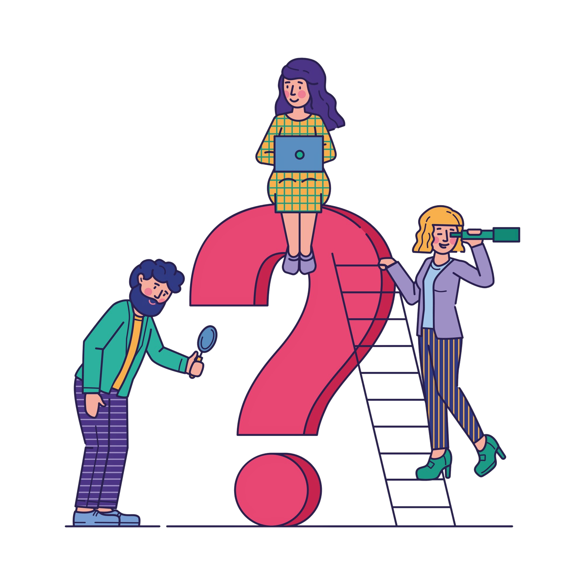
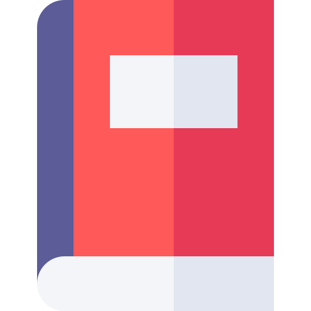
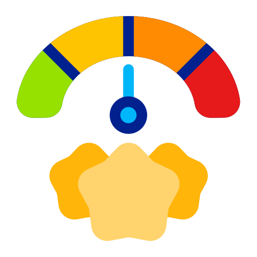

Progres Belajar
45%
Jam Belajar
12 Jam
Total waktu belajar hingga saat ini

Rekomendasi
Mulai Modul: DOM Manipulation
Berdasarkan hasil evaluasi, kamu siap ke materi berikutnya 🚀
Pre-Test Awal
Ikuti pre-test untuk memetakan level pengetahuanmu.
Hasil pre-test menentukan jalur belajar
wajib.

Analitik Belajar

12
Modul Selesai

78%
Rata-rata Skor

DOM Manipulation
Topik Terlemah
Modul Pembelajaran

JavaScript Dasar

JavaScript Lanjutan

DOM Manipulation
🔒 TerkunciSelesaikan modul sebelumnya untuk membuka.
Event Handling
Tersedia setelah DOM Manipulation selesai.
Asynchronous JS
Tersedia setelah Event Handling selesai.